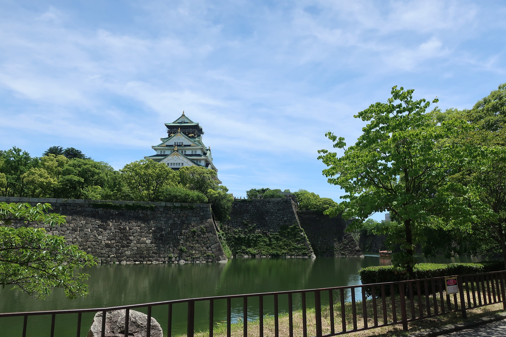
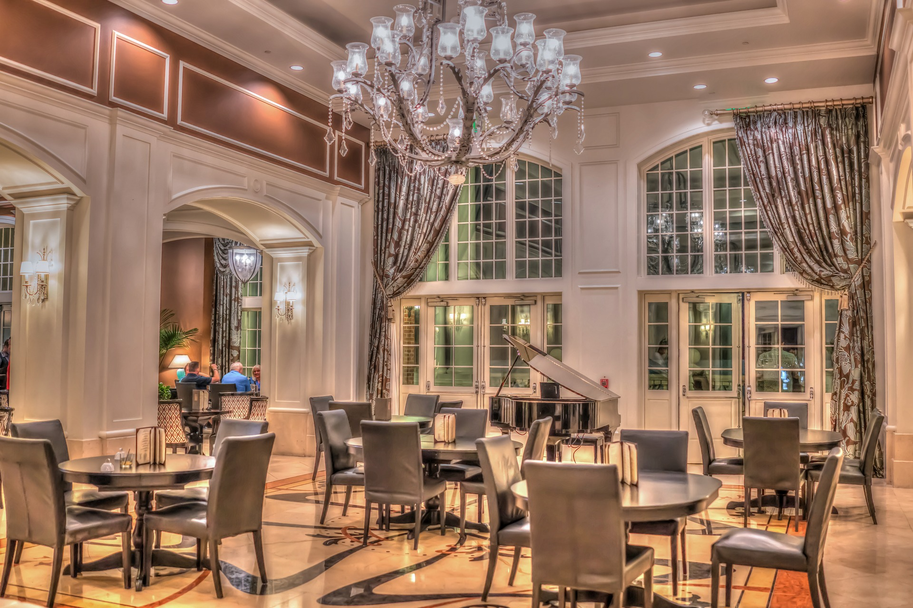

茶屋町界隈
大阪・キタ随一の若者の街。高層ビルのほとんどが総合設計制度を採用して公開空地を設けており、美しい景観をつくり出しているまち。

営業時間
各店舗により異なる
休日
各店舗により異なる
飲食・アミューズメント・雑貨・ファッションなどの店舗が多く並ぶ、大阪・キタ随一の若者の街・茶屋町界隈。以前からある生活雑貨専門デパート「梅田ロフト」や、ミュージカル劇場「梅田芸術劇場」、毎日放送などの高層ビルは、ほとんどが総合設計制度を採用して公開空地を設けており、それが美しい景観をつくり出している。近年では高架下のおしゃれなレストランやカフェにつづいて、2005年には「NU CHAYAMACHI」なども相次いで開業、若者文化の発信基地になっている。もとは「三番村」といわれ、鶴乃茶屋、萩乃茶屋、車茶屋といった茶屋で賑わう大阪有数の行楽地だったとか。また、鶴乃茶屋跡の石碑がある道は西国街道として、高麗橋より下関へ向かう交通の要所でもあり、界隈にある綱敷天神社には菅原道真が大宰府へ行く途中に参拝したという話も残っているとか。
住所
〒 530-0013 大阪市北区茶屋町
アクセス
阪急神戸線「大阪梅田駅」（茶屋町口）下車 徒歩5分、
JR大阪環状線「大阪駅」下車 徒歩10分、Osaka Metro御堂筋線「中津駅」下車 徒歩8分
料金
各店舗により異なる
周辺観光施設

周辺飲食


周辺ホテル

